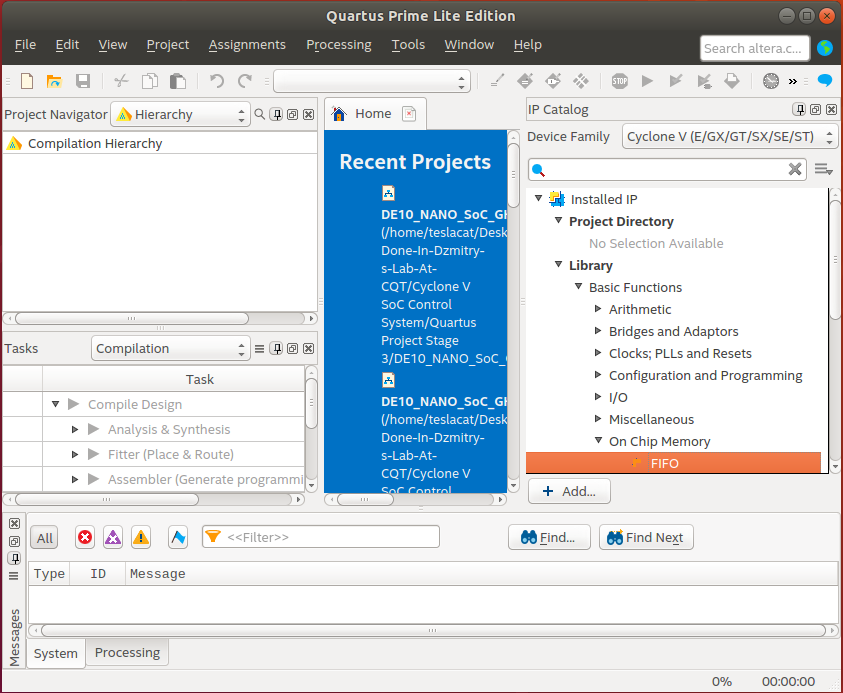
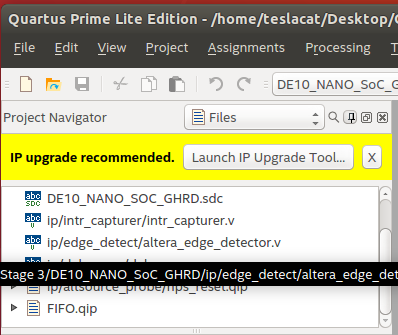
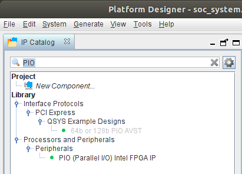

Processor-FPGA Communication: Using FIFO FPGA Part¶
| Date: | 20 Sep 2019 |
|---|
What is the idea?¶
- Your custom module, for example a counter, wants to send data to HPS (processor)
- FIFO is a buffer, it buffers data until the processor has time to read it
What are we gonna do?¶
- We will write a simple counter in the FPGA Part, the counter increases \(1\) every
clkcycle - This counter makes a write request every \(2^{24}\)
clkcycle to the FIFO, and writes the counter value to the FIFO - To FIFO read port is connected to 3 PIOs generated by Platform Designer(Qsys), these 3 PIOs can be directly accessed by the Processor via memory mapping, since this memory is shared by the FPGA and Processor
- Meanwhile, the 8 LEDs on the DE10-NANO board are connected to
usedw(used words) which indicates the number of data stored in the FIFO - We will write a simple reader in the Processor Part
- User execute the compiled C code in the terminal, then they type in number of data to read
- They will see read data printed to the terminal, as well as the decrease in number indicated by the LED
How FIFO works¶
The following IO definition corresponds to FIFO modules generated by Quartus library
- Each data in FIFO is called a “word”, the number of words currently in FIFO is
usedw(used words) - Writing to a FIFO: make
wrreq(write request) HIGH for oneclkcycle, then whatever is at inputdatagets written to the FIFO - Reading from the FIFO: make
rdreq(read request) HIGH for oneclkcycle, then the old value ofq(queue) gets clearedqhas a new value - Don’t write to FIFO when
fullis HIGH. Don’t read from FIFO whenemptyis HIGH - If
wrreqis HIGH for 5clkcycles, 5 data get written into the FIFO, Ifrdreqis HIGH for 5clkcycles, 5 data get cleared from the FIFO. That is why usually you don’t want these signals to be HIGH for more than 1clkcycle
// The following shows signal flow, "<--->" represents wires, <===> represents memory-map
// MyModule <---> FIFO Module <---> PIOs in Qsys generated Module(DE10_NANO_SoC_GHRD) <===> HPS
/* FIFO module description
input clock;
// Write side by FPGA
input wrreq; // write request
input [31:0] data; // data to write
output full;
// Read side by HPS, more accurately,
// Parallel IO(PIO) from Qsys generated Module
// We need two 32 bits PIOs:
// 1. PIO_FifoReadDataQueue: maps to q
// 2. PIO_FifoReadControl: maps to rdreq,empty
input rdreq; // read request
output [31:0] q; // data queue to read
output empty;
// Fill level, number of "used words" in the queue
output [7:0] usedw; // number of used words
*/
Use the FIFO library in quartus¶
- Find and create a FIFO module from the library

- Setup the module details
- Then these files will be generated
- Include
FIFO.qipfile into your project

Create PIO in Platform Designer¶
Create PIO (Parallel IO) in Platform Designer (Qsys) to connect to FIFO module
- Search PIO

- Create the necessary connections

- Download the following Qsys file to see the details
Modify the Standard DE10_NANO_SoC_GHRD.v¶
- create wires that are use to connect different modules in Verilog
// Wires to connect Custom Sub-Modules:
// Write side by FPGA
wire wire_FIFOwriteRequest;
wire [31:0] wire_FIFOwriteData;
wire wire_FIFOwriteFull;
// Read side by HPS, more accurately,
// Parallel IO(PIO) from Qsys generated Module(DE10_NANO_SoC_GHRD)
wire wire_FIFOreadRequest;
wire wire_FIFOreadRequestShortPulse;
ToShortPulse toShortPulse_FIFOreadRequest(
.clk(fpga_clk_50),
.longPulse(wire_FIFOreadRequest),
.shortPulse(wire_FIFOreadRequestShortPulse),
);
wire [31:0] wire_FIFOreadDataQueue;
wire wire_FIFOreadEmpty;
wire [7:0] wire_FIFOnumberOfUsedWords;
assign LED = wire_FIFOnumberOfUsedWords;
- Connect the module generated by Platform Designer (
soc_system) to the wires
//=======================================================
// Structural coding
//=======================================================
soc_system u0(
// other default connections...
//OOOOOOOOOOOOOOOOOOOOOOOOOOOOOOOOOOOOOOOOOOOOOOOOOO
// Begin Code added by me Part 1: IO Mapping
// FIFO
.fiforeadrequest_external_connection_export(wire_FIFOreadRequest), //output (to FPGA) PIO
.fiforeaddataqueue_external_connection_export(wire_FIFOreadDataQueue), //input (to HPS) PIO
.fiforeadempty_external_connection_export(wire_FIFOreadEmpty), //input (to HPS) PIO
// End Code added by me Part 1: IO Mapping
//OOOOOOOOOOOOOOOOOOOOOOOOOOOOOOOOOOOOOOOOOOOOOOOOOO
);
- Connect the FIFO to the wires
FIFO fifo(
.clock(fpga_clk_50),
// Write side by FPGA
.wrreq(wire_FIFOwriteRequest),
.data(wire_FIFOwriteData),
.full(wire_FIFOwriteFull),
// Read side by HPS, more accurately,
// Parallel IO(PIO) from Qsys generated Module
.rdreq(wire_FIFOreadRequestShortPulse),
.q(wire_FIFOreadDataQueue),
.empty(wire_FIFOreadEmpty),
.usedw(wire_FIFOnumberOfUsedWords),
);
- Connect MyModule (defined later) to the wires
MyModule myModule(
.clk(fpga_clk_50),
.FIFOwriteRequest(wire_FIFOwriteRequest),
.FIFOwriteData(wire_FIFOwriteData),
.FIFOwriteFull(wire_FIFOwriteFull),
);
- defined MyModule and module ToShortPulse
//OOOOOOOOOOOOOOOOOOOOOOOOOOOOOOOOOOOOOOOOOOOOOOOOOO
// Begin Code added by me Part 3: MyModule
module MyModule(
input clk,
output FIFOwriteRequest,
output reg [31:0] FIFOwriteData,
input FIFOwriteFull
);
ToShortPulse toShortPulse_FIFOwriteRequest(
.clk(clk),
.longPulse(FIFOwriteData[24] & ~FIFOwriteFull),
.shortPulse(FIFOwriteRequest),
);
always @(posedge clk) begin
FIFOwriteData <= FIFOwriteData+1;
end
endmodule
// Module to make longPulse into shortPulse
module ToShortPulse(
input clk,
input longPulse,
output reg shortPulse
);
reg last_longPulse;
always @ (posedge clk) begin
shortPulse <= (last_longPulse==0 && longPulse==1)?1:0;
last_longPulse <= longPulse;
end
endmodule
// End Code added by me Part 3: MyModule
//OOOOOOOOOOOOOOOOOOOOOOOOOOOOOOOOOOOOOOOOOOOOOOOOOO
The full code¶
//=======================================================
// This code is generated by Terasic System Builder
//=======================================================
module DE10_NANO_SoC_GHRD(
//////////// CLOCK //////////
input FPGA_CLK1_50,
input FPGA_CLK2_50,
input FPGA_CLK3_50,
//////////// HDMI //////////
inout HDMI_I2C_SCL,
inout HDMI_I2C_SDA,
inout HDMI_I2S,
inout HDMI_LRCLK,
inout HDMI_MCLK,
inout HDMI_SCLK,
output HDMI_TX_CLK,
output [23: 0] HDMI_TX_D,
output HDMI_TX_DE,
output HDMI_TX_HS,
input HDMI_TX_INT,
output HDMI_TX_VS,
//////////// HPS //////////
inout HPS_CONV_USB_N,
output [14: 0] HPS_DDR3_ADDR,
output [ 2: 0] HPS_DDR3_BA,
output HPS_DDR3_CAS_N,
output HPS_DDR3_CK_N,
output HPS_DDR3_CK_P,
output HPS_DDR3_CKE,
output HPS_DDR3_CS_N,
output [ 3: 0] HPS_DDR3_DM,
inout [31: 0] HPS_DDR3_DQ,
inout [ 3: 0] HPS_DDR3_DQS_N,
inout [ 3: 0] HPS_DDR3_DQS_P,
output HPS_DDR3_ODT,
output HPS_DDR3_RAS_N,
output HPS_DDR3_RESET_N,
input HPS_DDR3_RZQ,
output HPS_DDR3_WE_N,
output HPS_ENET_GTX_CLK,
inout HPS_ENET_INT_N,
output HPS_ENET_MDC,
inout HPS_ENET_MDIO,
input HPS_ENET_RX_CLK,
input [ 3: 0] HPS_ENET_RX_DATA,
input HPS_ENET_RX_DV,
output [ 3: 0] HPS_ENET_TX_DATA,
output HPS_ENET_TX_EN,
inout HPS_GSENSOR_INT,
inout HPS_I2C0_SCLK,
inout HPS_I2C0_SDAT,
inout HPS_I2C1_SCLK,
inout HPS_I2C1_SDAT,
inout HPS_KEY,
inout HPS_LED,
inout HPS_LTC_GPIO,
output HPS_SD_CLK,
inout HPS_SD_CMD,
inout [ 3: 0] HPS_SD_DATA,
output HPS_SPIM_CLK,
input HPS_SPIM_MISO,
output HPS_SPIM_MOSI,
inout HPS_SPIM_SS,
input HPS_UART_RX,
output HPS_UART_TX,
input HPS_USB_CLKOUT,
inout [ 7: 0] HPS_USB_DATA,
input HPS_USB_DIR,
input HPS_USB_NXT,
output HPS_USB_STP,
//////////// KEY //////////
input [ 1: 0] KEY,
//////////// LED //////////
output [ 7: 0] LED,
//////////// SW //////////
input [ 3: 0] SW
);
//=======================================================
// REG/WIRE declarations
//=======================================================
wire hps_fpga_reset_n;
wire [1: 0] fpga_debounced_buttons;
wire [6: 0] fpga_led_internal;
wire [2: 0] hps_reset_req;
wire hps_cold_reset;
wire hps_warm_reset;
wire hps_debug_reset;
wire [27: 0] stm_hw_events;
wire fpga_clk_50;
// connection of internal logics
//assign LED[7: 1] = fpga_led_internal;
assign fpga_clk_50 = FPGA_CLK1_50;
assign stm_hw_events = {{15{1'b0}}, SW, fpga_led_internal, fpga_debounced_buttons};
//=======================================================
// Structural coding
//=======================================================
soc_system u0(
//Clock&Reset
.clk_clk(FPGA_CLK1_50), // clk.clk
.reset_reset_n(hps_fpga_reset_n), // reset.reset_n
//HPS ddr3
.memory_mem_a(HPS_DDR3_ADDR), // memory.mem_a
.memory_mem_ba(HPS_DDR3_BA), // .mem_ba
.memory_mem_ck(HPS_DDR3_CK_P), // .mem_ck
.memory_mem_ck_n(HPS_DDR3_CK_N), // .mem_ck_n
.memory_mem_cke(HPS_DDR3_CKE), // .mem_cke
.memory_mem_cs_n(HPS_DDR3_CS_N), // .mem_cs_n
.memory_mem_ras_n(HPS_DDR3_RAS_N), // .mem_ras_n
.memory_mem_cas_n(HPS_DDR3_CAS_N), // .mem_cas_n
.memory_mem_we_n(HPS_DDR3_WE_N), // .mem_we_n
.memory_mem_reset_n(HPS_DDR3_RESET_N), // .mem_reset_n
.memory_mem_dq(HPS_DDR3_DQ), // .mem_dq
.memory_mem_dqs(HPS_DDR3_DQS_P), // .mem_dqs
.memory_mem_dqs_n(HPS_DDR3_DQS_N), // .mem_dqs_n
.memory_mem_odt(HPS_DDR3_ODT), // .mem_odt
.memory_mem_dm(HPS_DDR3_DM), // .mem_dm
.memory_oct_rzqin(HPS_DDR3_RZQ), // .oct_rzqin
//HPS ethernet
.hps_0_hps_io_hps_io_emac1_inst_TX_CLK(HPS_ENET_GTX_CLK), // hps_0_hps_io.hps_io_emac1_inst_TX_CLK
.hps_0_hps_io_hps_io_emac1_inst_TXD0(HPS_ENET_TX_DATA[0]), // .hps_io_emac1_inst_TXD0
.hps_0_hps_io_hps_io_emac1_inst_TXD1(HPS_ENET_TX_DATA[1]), // .hps_io_emac1_inst_TXD1
.hps_0_hps_io_hps_io_emac1_inst_TXD2(HPS_ENET_TX_DATA[2]), // .hps_io_emac1_inst_TXD2
.hps_0_hps_io_hps_io_emac1_inst_TXD3(HPS_ENET_TX_DATA[3]), // .hps_io_emac1_inst_TXD3
.hps_0_hps_io_hps_io_emac1_inst_RXD0(HPS_ENET_RX_DATA[0]), // .hps_io_emac1_inst_RXD0
.hps_0_hps_io_hps_io_emac1_inst_MDIO(HPS_ENET_MDIO), // .hps_io_emac1_inst_MDIO
.hps_0_hps_io_hps_io_emac1_inst_MDC(HPS_ENET_MDC), // .hps_io_emac1_inst_MDC
.hps_0_hps_io_hps_io_emac1_inst_RX_CTL(HPS_ENET_RX_DV), // .hps_io_emac1_inst_RX_CTL
.hps_0_hps_io_hps_io_emac1_inst_TX_CTL(HPS_ENET_TX_EN), // .hps_io_emac1_inst_TX_CTL
.hps_0_hps_io_hps_io_emac1_inst_RX_CLK(HPS_ENET_RX_CLK), // .hps_io_emac1_inst_RX_CLK
.hps_0_hps_io_hps_io_emac1_inst_RXD1(HPS_ENET_RX_DATA[1]), // .hps_io_emac1_inst_RXD1
.hps_0_hps_io_hps_io_emac1_inst_RXD2(HPS_ENET_RX_DATA[2]), // .hps_io_emac1_inst_RXD2
.hps_0_hps_io_hps_io_emac1_inst_RXD3(HPS_ENET_RX_DATA[3]), // .hps_io_emac1_inst_RXD3
//HPS SD card
.hps_0_hps_io_hps_io_sdio_inst_CMD(HPS_SD_CMD), // .hps_io_sdio_inst_CMD
.hps_0_hps_io_hps_io_sdio_inst_D0(HPS_SD_DATA[0]), // .hps_io_sdio_inst_D0
.hps_0_hps_io_hps_io_sdio_inst_D1(HPS_SD_DATA[1]), // .hps_io_sdio_inst_D1
.hps_0_hps_io_hps_io_sdio_inst_CLK(HPS_SD_CLK), // .hps_io_sdio_inst_CLK
.hps_0_hps_io_hps_io_sdio_inst_D2(HPS_SD_DATA[2]), // .hps_io_sdio_inst_D2
.hps_0_hps_io_hps_io_sdio_inst_D3(HPS_SD_DATA[3]), // .hps_io_sdio_inst_D3
//HPS USB
.hps_0_hps_io_hps_io_usb1_inst_D0(HPS_USB_DATA[0]), // .hps_io_usb1_inst_D0
.hps_0_hps_io_hps_io_usb1_inst_D1(HPS_USB_DATA[1]), // .hps_io_usb1_inst_D1
.hps_0_hps_io_hps_io_usb1_inst_D2(HPS_USB_DATA[2]), // .hps_io_usb1_inst_D2
.hps_0_hps_io_hps_io_usb1_inst_D3(HPS_USB_DATA[3]), // .hps_io_usb1_inst_D3
.hps_0_hps_io_hps_io_usb1_inst_D4(HPS_USB_DATA[4]), // .hps_io_usb1_inst_D4
.hps_0_hps_io_hps_io_usb1_inst_D5(HPS_USB_DATA[5]), // .hps_io_usb1_inst_D5
.hps_0_hps_io_hps_io_usb1_inst_D6(HPS_USB_DATA[6]), // .hps_io_usb1_inst_D6
.hps_0_hps_io_hps_io_usb1_inst_D7(HPS_USB_DATA[7]), // .hps_io_usb1_inst_D7
.hps_0_hps_io_hps_io_usb1_inst_CLK(HPS_USB_CLKOUT), // .hps_io_usb1_inst_CLK
.hps_0_hps_io_hps_io_usb1_inst_STP(HPS_USB_STP), // .hps_io_usb1_inst_STP
.hps_0_hps_io_hps_io_usb1_inst_DIR(HPS_USB_DIR), // .hps_io_usb1_inst_DIR
.hps_0_hps_io_hps_io_usb1_inst_NXT(HPS_USB_NXT), // .hps_io_usb1_inst_NXT
//HPS SPI
.hps_0_hps_io_hps_io_spim1_inst_CLK(HPS_SPIM_CLK), // .hps_io_spim1_inst_CLK
.hps_0_hps_io_hps_io_spim1_inst_MOSI(HPS_SPIM_MOSI), // .hps_io_spim1_inst_MOSI
.hps_0_hps_io_hps_io_spim1_inst_MISO(HPS_SPIM_MISO), // .hps_io_spim1_inst_MISO
.hps_0_hps_io_hps_io_spim1_inst_SS0(HPS_SPIM_SS), // .hps_io_spim1_inst_SS0
//HPS UART
.hps_0_hps_io_hps_io_uart0_inst_RX(HPS_UART_RX), // .hps_io_uart0_inst_RX
.hps_0_hps_io_hps_io_uart0_inst_TX(HPS_UART_TX), // .hps_io_uart0_inst_TX
//HPS I2C1
.hps_0_hps_io_hps_io_i2c0_inst_SDA(HPS_I2C0_SDAT), // .hps_io_i2c0_inst_SDA
.hps_0_hps_io_hps_io_i2c0_inst_SCL(HPS_I2C0_SCLK), // .hps_io_i2c0_inst_SCL
//HPS I2C2
.hps_0_hps_io_hps_io_i2c1_inst_SDA(HPS_I2C1_SDAT), // .hps_io_i2c1_inst_SDA
.hps_0_hps_io_hps_io_i2c1_inst_SCL(HPS_I2C1_SCLK), // .hps_io_i2c1_inst_SCL
//GPIO
.hps_0_hps_io_hps_io_gpio_inst_GPIO09(HPS_CONV_USB_N), // .hps_io_gpio_inst_GPIO09
.hps_0_hps_io_hps_io_gpio_inst_GPIO35(HPS_ENET_INT_N), // .hps_io_gpio_inst_GPIO35
.hps_0_hps_io_hps_io_gpio_inst_GPIO40(HPS_LTC_GPIO), // .hps_io_gpio_inst_GPIO40
.hps_0_hps_io_hps_io_gpio_inst_GPIO53(HPS_LED), // .hps_io_gpio_inst_GPIO53
.hps_0_hps_io_hps_io_gpio_inst_GPIO54(HPS_KEY), // .hps_io_gpio_inst_GPIO54
.hps_0_hps_io_hps_io_gpio_inst_GPIO61(HPS_GSENSOR_INT), // .hps_io_gpio_inst_GPIO61
//FPGA Partion
.led_pio_external_connection_export(fpga_led_internal), // led_pio_external_connection.export
.dipsw_pio_external_connection_export(SW), // dipsw_pio_external_connection.export
.button_pio_external_connection_export(fpga_debounced_buttons),
// button_pio_external_connection.export
.hps_0_h2f_reset_reset_n(hps_fpga_reset_n), // hps_0_h2f_reset.reset_n
.hps_0_f2h_cold_reset_req_reset_n(~hps_cold_reset), // hps_0_f2h_cold_reset_req.reset_n
.hps_0_f2h_debug_reset_req_reset_n(~hps_debug_reset), // hps_0_f2h_debug_reset_req.reset_n
.hps_0_f2h_stm_hw_events_stm_hwevents(stm_hw_events), // hps_0_f2h_stm_hw_events.stm_hwevents
.hps_0_f2h_warm_reset_req_reset_n(~hps_warm_reset), // hps_0_f2h_warm_reset_req.reset_n
//OOOOOOOOOOOOOOOOOOOOOOOOOOOOOOOOOOOOOOOOOOOOOOOOOO
// Begin Code added by me Part 1: IO Mapping
// FIFO
.fiforeadrequest_external_connection_export(wire_FIFOreadRequest), //output (to FPGA) PIO
.fiforeaddataqueue_external_connection_export(wire_FIFOreadDataQueue), //input (to HPS) PIO
.fiforeadempty_external_connection_export(wire_FIFOreadEmpty), //input (to HPS) PIO
// End Code added by me Part 1: IO Mapping
//OOOOOOOOOOOOOOOOOOOOOOOOOOOOOOOOOOOOOOOOOOOOOOOOOO
);
// Debounce logic to clean out glitches within 1ms
debounce debounce_inst(
.clk(fpga_clk_50),
.reset_n(hps_fpga_reset_n),
.data_in(KEY),
.data_out(fpga_debounced_buttons)
);
defparam debounce_inst.WIDTH = 2;
defparam debounce_inst.POLARITY = "LOW";
defparam debounce_inst.TIMEOUT = 50000; // at 50Mhz this is a debounce time of 1ms
defparam debounce_inst.TIMEOUT_WIDTH = 16; // ceil(log2(TIMEOUT))
// Source/Probe megawizard instance
hps_reset hps_reset_inst(
.source_clk(fpga_clk_50),
.source(hps_reset_req)
);
altera_edge_detector pulse_cold_reset(
.clk(fpga_clk_50),
.rst_n(hps_fpga_reset_n),
.signal_in(hps_reset_req[0]),
.pulse_out(hps_cold_reset)
);
defparam pulse_cold_reset.PULSE_EXT = 6;
defparam pulse_cold_reset.EDGE_TYPE = 1;
defparam pulse_cold_reset.IGNORE_RST_WHILE_BUSY = 1;
altera_edge_detector pulse_warm_reset(
.clk(fpga_clk_50),
.rst_n(hps_fpga_reset_n),
.signal_in(hps_reset_req[1]),
.pulse_out(hps_warm_reset)
);
defparam pulse_warm_reset.PULSE_EXT = 2;
defparam pulse_warm_reset.EDGE_TYPE = 1;
defparam pulse_warm_reset.IGNORE_RST_WHILE_BUSY = 1;
altera_edge_detector pulse_debug_reset(
.clk(fpga_clk_50),
.rst_n(hps_fpga_reset_n),
.signal_in(hps_reset_req[2]),
.pulse_out(hps_debug_reset)
);
defparam pulse_debug_reset.PULSE_EXT = 32;
defparam pulse_debug_reset.EDGE_TYPE = 1;
defparam pulse_debug_reset.IGNORE_RST_WHILE_BUSY = 1;
reg [25: 0] counter;
reg led_level;
always @(posedge fpga_clk_50 or negedge hps_fpga_reset_n) begin
if (~hps_fpga_reset_n) begin
counter <= 0;
led_level <= 0;
end
else if (counter == 24999999) begin
counter <= 0;
led_level <= ~led_level;
end
else
counter <= counter + 1'b1;
end
//assign LED[0] = led_level;
//OOOOOOOOOOOOOOOOOOOOOOOOOOOOOOOOOOOOOOOOOOOOOOOOOO
// Begin Code added by me Part 2:
// The following shows signal flow, "<--->" represents wires, <===> represents memory-map
// MyModule <---> FIFO Module <---> PIOs in Qsys generated Module(DE10_NANO_SoC_GHRD) <===> HPS
/* FIFO module description
input clock;
// Write side by FPGA
input wrreq; // write request
input [31:0] data; // data to write
output full;
// Read side by HPS, more accurately,
// Parallel IO(PIO) from Qsys generated Module
// We need two 32 bits PIOs:
// 1. PIO_FifoReadDataQueue: maps to q
// 2. PIO_FifoReadControl: maps to rdreq,empty
input rdreq; // read request
output [31:0] q; // data queue to read
output empty;
// Fill level, number of "used words" in the queue
output [7:0] usedw; // number of used words
*/
// Wires to connect Custom Sub-Modules:
// Write side by FPGA
wire wire_FIFOwriteRequest;
wire [31:0] wire_FIFOwriteData;
wire wire_FIFOwriteFull;
// Read side by HPS, more accurately,
// Parallel IO(PIO) from Qsys generated Module(DE10_NANO_SoC_GHRD)
wire wire_FIFOreadRequest;
wire wire_FIFOreadRequestShortPulse;
ToShortPulse toShortPulse_FIFOreadRequest(
.clk(fpga_clk_50),
.longPulse(wire_FIFOreadRequest),
.shortPulse(wire_FIFOreadRequestShortPulse),
);
wire [31:0] wire_FIFOreadDataQueue;
wire wire_FIFOreadEmpty;
wire [7:0] wire_FIFOnumberOfUsedWords;
assign LED = wire_FIFOnumberOfUsedWords;
// Custom Sub-Modules:
FIFO fifo(
.clock(fpga_clk_50),
// Write side by FPGA
.wrreq(wire_FIFOwriteRequest),
.data(wire_FIFOwriteData),
.full(wire_FIFOwriteFull),
// Read side by HPS, more accurately,
// Parallel IO(PIO) from Qsys generated Module
.rdreq(wire_FIFOreadRequestShortPulse),
.q(wire_FIFOreadDataQueue),
.empty(wire_FIFOreadEmpty),
.usedw(wire_FIFOnumberOfUsedWords),
);
MyModule myModule(
.clk(fpga_clk_50),
.FIFOwriteRequest(wire_FIFOwriteRequest),
.FIFOwriteData(wire_FIFOwriteData),
.FIFOwriteFull(wire_FIFOwriteFull),
);
/* In the IO mapping at the beginning of this file
soc_system u0(
...
.fiforeadrequest_external_connection_export(wire_FIFOreadRequest), //output (to FPGA) PIO
.fiforeaddataqueue_external_connection_export(wire_FIFOreadDataQueue), //input (to HPS) PIO
.fiforeadempty_external_connection_export(wire_FIFOreadEmpty), //input (to HPS) PIO
...
);
*/
// End Code added by me Part 2
//OOOOOOOOOOOOOOOOOOOOOOOOOOOOOOOOOOOOOOOOOOOOOOOOOO
endmodule
//===========================================================
//OOOOOOOOOOOOOOOOOOOOOOOOOOOOOOOOOOOOOOOOOOOOOOOOOO
// Begin Code added by me Part 3: MyModule
module MyModule(
input clk,
output FIFOwriteRequest,
output reg [31:0] FIFOwriteData,
input FIFOwriteFull
);
ToShortPulse toShortPulse_FIFOwriteRequest(
.clk(clk),
.longPulse(FIFOwriteData[24] & ~FIFOwriteFull),
.shortPulse(FIFOwriteRequest),
);
always @(posedge clk) begin
FIFOwriteData <= FIFOwriteData+1;
end
endmodule
// Module to make longPulse into shortPulse
module ToShortPulse(
input clk,
input longPulse,
output reg shortPulse
);
reg last_longPulse;
always @ (posedge clk) begin
shortPulse <= (last_longPulse==0 && longPulse==1)?1:0;
last_longPulse <= longPulse;
end
endmodule
// End Code added by me Part 3: MyModule
//OOOOOOOOOOOOOOOOOOOOOOOOOOOOOOOOOOOOOOOOOOOOOOOOOO